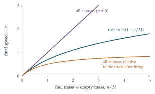

A railway truck, initially at rest, can move forwards without friction on a long straight horizontal track. On the truck, \(n\) guns are mounted parallel to the track and facing backwards, where \(n > 1\). Each of the guns is loaded with a single projectile of mass \(m\). The mass of the truck and guns (but not including the projectiles) is \(M\).
When a gun is fired, the projectile leaves its muzzle horizontally with a speed \(v - V\) relative to the ground, where \(V\) is the speed of the truck immediately before the gun is fired.
All \(n\) guns are fired simultaneously. Find the speed, \(u\), with which the truck moves, and show that the kinetic energy, \(K\), which is gained by the system (truck, guns and projectiles) is given by \[K = \tfrac12nmv^2\Bigl(1 + \frac{nm}{M}\Bigr).\]
Instead, the guns are fired one at a time. Let \(u_r\) be the speed of the truck when \(r\) guns have been fired, so that \(u_0 = 0\). Show that, for \(1 \leq r \leq n\), \[u_r - u_{r-1} = \frac{mv}{M + (n - r)m} \tag{$*$}\] and hence that \(u_n < u\).
Let \(K_r\) be the total kinetic energy of the system when \(r\) guns have been fired (one at a time), so that \(K_0 = 0\). Using \((*)\), show that, for \(1 \leq r \leq n\), \[K_r - K_{r-1} = \tfrac12mv^2 + \tfrac12mv(u_r - u_{r-1})\] and hence show that \[K_n = \tfrac12nmv^2 + \tfrac12mvu_n.\] Deduce that \(K_n < K\).
The hook
A rocket in space has nothing to push against. It moves forward by throwing mass backwards, and conservation of momentum does the rest. A truck firing guns off its back is a rocket broken into pieces: each projectile is a lump of exhaust.
So should the guns fire all at once, or one after another? This question gives a definite answer, but look carefully at what it compares. Firing all at once gives the truck more speed, but it also uses more energy, so the guns are not doing the same job in the two cases. Change what is held fixed, and the answer reverses. Sorting this out leads to the most important equation in spaceflight, Tsiolkovsky’s rocket equation, and to the reason why real rockets have several stages.
Before you start
Before a gun fires, the truck moves at \(V\). Afterwards the projectile’s velocity is \(V - v\) (that is, speed \(v - V\) backwards). What is the projectile’s velocity relative to the truck before firing?
It is \((V - v) - V = -v\). So each gun throws its projectile backwards at speed \(v\) relative to the truck’s velocity just before firing. That is the fixed rule of this question; keep it in mind, because it is what decides the answer.
Working it through
Stage 1 All at once
The system starts at rest, with zero momentum. After firing, the truck (mass \(M\)) moves forward at \(u\), and the \(n\) projectiles move backwards at speed \(v\) (since \(V = 0\) before firing). So \[Mu - nmv = 0, \qquad u = \frac{nmv}{M}.\] The kinetic energy gained is \[K = \tfrac12Mu^2 + \tfrac12nmv^2 = \tfrac12\frac{n^2m^2v^2}{M} + \tfrac12nmv^2 = \tfrac12nmv^2\Bigl(1 + \frac{nm}{M}\Bigr). \qed\]
Stage 2 One at a time
Just before the \(r\)th gun fires, what is the mass of the truck with its remaining projectiles, and what is its speed? Write down conservation of momentum for the \(r\)th firing.
Before the \(r\)th firing, the truck carries \(n - r + 1\) projectiles, so it has mass \(M + (n - r + 1)m\) and speed \(u_{r-1}\). Afterwards, the truck with \(n - r\) projectiles has speed \(u_r\), and the fired projectile has velocity \(u_{r-1} - v\). Momentum is conserved: \[\bigl(M + (n - r + 1)m\bigr)u_{r-1} = \bigl(M + (n - r)m\bigr)u_r + m(u_{r-1} - v).\] The \(mu_{r-1}\) terms rearrange to give \(\bigl(M + (n - r)m\bigr)(u_r - u_{r-1}) = mv\), which is \((*)\).■
Adding up the increments, \[u_n = \sum_{r=1}^{n}\frac{mv}{M + (n - r)m} = \frac{mv}{M} + \frac{mv}{M + m} + \cdots + \frac{mv}{M + (n - 1)m}.\] Every term after the first is smaller than \(\frac{mv}{M}\), and \(n > 1\), so \(u_n < \frac{nmv}{M} = u\).■
Why does firing one at a time do worse here? When the first gun fires, it has to accelerate the truck and the \(n - 1\) unfired projectiles, so it produces less of a speed increase than it would on the bare truck.
Stage 3 The energy bill
Write down the change in kinetic energy at the \(r\)th firing. How can \((*)\) help you simplify the term involving \(u_r^2 - u_{r-1}^2\)?
The kinetic energy changes by \[K_r - K_{r-1} = \tfrac12\bigl(M + (n - r)m\bigr)u_r^2 + \tfrac12m(u_{r-1} - v)^2 - \tfrac12\bigl(M + (n - r + 1)m\bigr)u_{r-1}^2.\] The last two terms combine to \(\frac12m(v^2 - 2vu_{r-1}) - \frac12\bigl(M + (n - r)m\bigr)u_{r-1}^2\). Then, factorising a difference of squares and using \((*)\), \[\tfrac12\bigl(M + (n - r)m\bigr)(u_r^2 - u_{r-1}^2) = \tfrac12mv(u_r + u_{r-1}).\] So \[K_r - K_{r-1} = \tfrac12mv(u_r + u_{r-1}) + \tfrac12mv^2 - mvu_{r-1} = \tfrac12mv^2 + \tfrac12mv(u_r - u_{r-1}). \qed\] Summing from \(r = 1\) to \(n\), the increments \(u_r - u_{r-1}\) telescope to \(u_n\): \[K_n = \tfrac12nmv^2 + \tfrac12mvu_n. \qed\] Finally, \(K = \frac12nmv^2 + \frac12nmv^2\cdot\frac{nm}{M} = \frac12nmv^2 + \frac12mvu\), so \(K_n < K\) because \(u_n < u\).■
Looking back
Momentum for each step. Each firing was a small two-body problem: the truck with its load, and one projectile.
Telescoping sums. The increments \((*)\) and the energy increments added up neatly.
Read the conclusion carefully. Firing all at once gives more speed, but costs more energy. The question compares two processes that do different amounts of work.
What’s really going on
What should be held fixed?
A real gun, or a rocket engine, throws its projectile at a fixed speed relative to itself, measured just after the projectile leaves. In this question the reference is the truck’s speed before firing. For a small projectile the difference is tiny, but when all \(n\) projectiles are fired at once it matters a great deal: in part (i), a heavy load of projectiles is thrown back at speed \(v\) as if the truck did not recoil at all, which needs a lot of energy.
If instead every projectile leaves at speed \(v\) relative to the truck after firing, the conclusion reverses. All at once gives \(u = \frac{nmv}{M + nm}\); one at a time gives \(u_n = \sum_{k=1}^{n}\frac{mv}{M + km}\), which is larger, because each term is at least \(\frac{mv}{M + nm}\). Now firing one at a time wins: each projectile pushes off from a truck that is already moving, and each later gun has less mass to accelerate. (Check this in the exercises.)
The rocket equation
Now let the projectiles become very small and very numerous, with total mass \(\mu = nm\) fixed: this is a rocket burning fuel continuously. The sum for \(u_n\) becomes an integral (both conventions give the same limit): \[u_n = \sum_{k=0}^{n-1}\frac{mv}{M + km} \;\to\; \int_0^{\mu}\frac{v\,\mathrm{d}s}{M + s} = v\ln\frac{M + \mu}{M}.\] This is Tsiolkovsky’s rocket equation: a rocket whose exhaust leaves at speed \(v\) relative to the rocket gains speed \[\Delta u = v\ln\frac{m_{\text{initial}}}{m_{\text{final}}}.\] Figure 10.3.1 compares the three answers. The logarithm is the problem: to reach the orbital speed of about \(7.8\) km/s with an exhaust speed of about \(4.5\) km/s (good chemical fuel), the mass ratio must be \(e^{7.8/4.5} \approx 5.7\), and once air resistance and gravity are included it is nearer \(10\) or more. Almost all of a rocket is fuel.

Why rockets have stages
The logarithm also explains staging. A rocket that drops its empty fuel tanks part way up no longer has to accelerate their dead mass. Since the gains of successive stages add (like the guns), while each stage’s gain depends on the ratio of its masses, splitting a rocket into stages lets it reach speeds that a single stage of the same total mass cannot. The Saturn V that took astronauts to the Moon had three stages; its first stage burned about \(2000\) tonnes of fuel in under three minutes.
Konstantin Tsiolkovsky, a deaf schoolteacher in the provincial Russian town of Kaluga, published the rocket equation in 1903, in a paper entitled “Exploration of outer space by means of reaction devices”. He worked out multi-stage rockets, liquid hydrogen and oxygen fuel, and space stations, decades before any of them could be built. The equation had appeared earlier in less prominent places (William Moore derived a version in 1810), but Tsiolkovsky was the first to see what it meant for spaceflight. “The Earth is the cradle of humanity,” he wrote, “but one cannot live in the cradle forever.”
The thinking skill
A continuous process can often be understood as the limit of many small discrete steps. Solve the discrete problem exactly, then let the step size shrink: sums become integrals.
Here \(n\) guns became a rocket and a sum became a logarithm. At university you will see the same move whenever a physical law is derived: a small element is analysed, and the results are added up into an integral or a differential equation.
Try this next
The other convention. Redo parts (i) and (ii) supposing each projectile leaves at speed \(v\) relative to the truck after firing. Show that now firing one at a time gives the larger final speed.
A comet in a dust cloud. (From STEP III, 2009.) A comet of mass \(M\) enters a stationary dust cloud at speed \(V\); after travelling a distance \(x\) its mass is \(M(1 + bx)\). If no other force acts, show that \((1 + bx)v = V\) and find \(x\) in terms of \(t\). If a constant force \(Mf\) acts in the direction of motion, use force \(=\) rate of change of momentum to show that \(v = \frac{ft + V}{1 + bx}\). Show that the comet can move at constant speed if \(bV^2 = f\), and that otherwise its speed tends to \(\sqrt{f/b}\).
Two stages. A rocket has exhaust speed \(v\), empty mass \(M\) and fuel mass \(9M\). Find its final speed. Now split it into two stages, each with empty mass \(\frac12M\) and fuel \(4.5M\), the first stage being dropped when empty. Compare the final speeds.
The inequality. Prove that \(\frac{x}{1 + x} \leq \ln(1 + x) \leq x\) for \(x \geq 0\), by comparing \(\frac{1}{1 + s}\) with \(1\) and with \(\frac{1}{1 + x}\) on \([0, x]\).
Further reading
Daniel Kleppner & Robert Kolenkow, An Introduction to Mechanics (Cambridge University Press), Chapter 4. Momentum, variable mass and the rocket equation.
George Sutton & Oscar Biblarz, Rocket Propulsion Elements (Wiley). The standard engineering text; the opening chapters are readable after this section.
Hermann Oberth, Ways to Spaceflight (NASA translation, free online). A pioneer’s own account.